AABB
Used to draw an AABB bounding box.
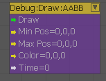
Inputs
| Port | Type | Description |
|---|---|---|
| Draw | Any | Draws an AABB bounding box |
| MinPos | Vec3 | Minimum position of the bounding box |
| MaxPos | Vec3 | Maximum position of the bounding box |
| Color | Vec3 | Color of the bounding box |
| Time | Float | Number of seconds the bounding box will be visible for |
Cone
Used to draw a cone for debugging purposes.
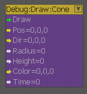
Inputs
| Port | Type | Description |
|---|---|---|
| Draw | Any | Draws a cone |
| Pos | Vec3 | Position of the cone |
| Dir | Vec3 | Direction of the cone axis |
| Radius | Float | Radius of the cone base |
| Height | Float | Height of the cone |
| Color | Vec3 | Color of the cone |
| Time | Float | Number of seconds the cone will be visible for |
Cylinder
Used to draw a Cylinder for debugging purposes.
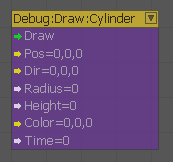
Inputs
| Port | Type | Description |
|---|---|---|
| Draw | Any | Draws a cylinder |
| Pos | Vec3 | Position of the cylinder |
| Dir | Vec3 | Direction of the cylinder axis |
| Radius | Float | Radius of the cylinder |
| Height | Float | Height of the cylinder |
| Color | Vec3 | Color of the cylinder |
| Time | Float | Number of seconds the cylinder will be visible for |
Direction
Used to draw an arrow for debugging purposes.
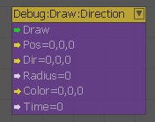
Inputs
| Port | Type | Description |
|---|---|---|
| Draw | Any | Draws an arrow |
| Pos | Vec3 | Position of the arrow |
| Dir | Vec3 | Direction the arrow is pointing |
| Radius | Float | Radius of the arrow head |
| Color | Vec3 | Color of the arrow |
| Time | Float | Number of seconds the arrow will be visible for |
EntityTag
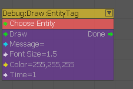
Formerly "DisplayTag". You can use this node to debug entities within a level. When you setup an entity with the DisplayTag it will printout its EntityID above the object in the world.
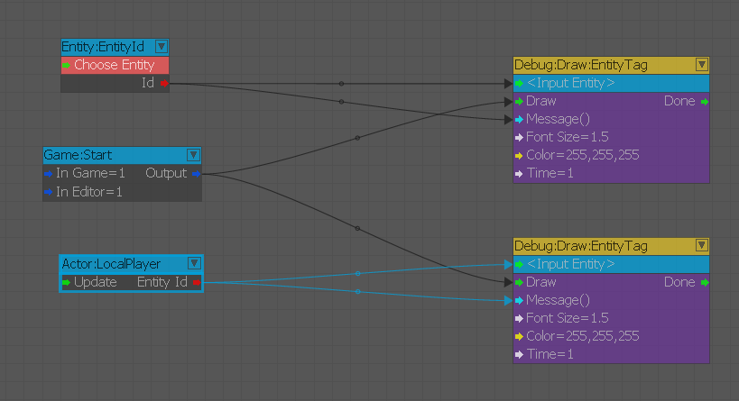
In the above example, we are displaying the EntityID of the Player and Human on game start.
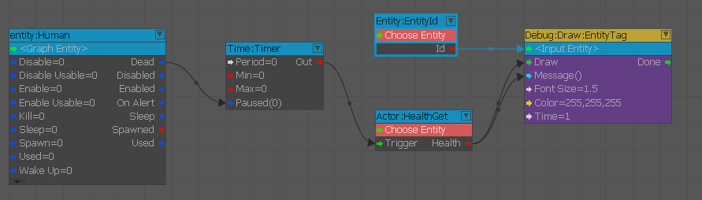
In this example, we are using the Draw:EntityTag to output the health of the entity Human every second via an Actor:HealthGet node. Then when Human is dead, we pause the timer which will stop the update to the Draw:EntityTag node.
Inputs
| Port | Type | Description |
|---|---|---|
| Draw | Any | Displays a text message above an entity |
| Message | String | Text message |
| FontSize | Float | Text message font size |
| Color | Vec3 | Text message color |
| Time | Float | Number of seconds the message will be visible for |
Outputs
| Port | Type | Description |
|---|---|---|
| Done | Triggers when the text message is no longer visible |
EntityTagAdvanced
Formerly "DisplayTagAdv". This node is similar to the Draw:EntityTag node, but with more options for controlling the output of the message.
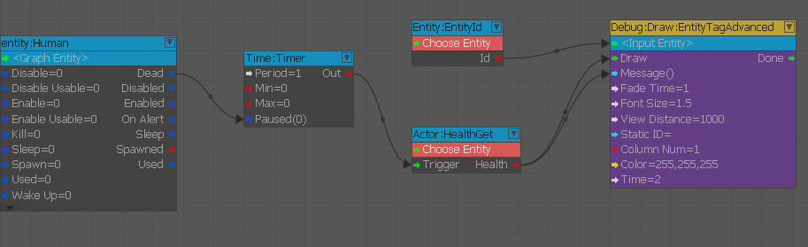
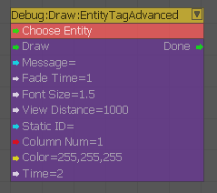
In the above example like before we are outputting the health value of Human to the Draw:EntityTagAdvanced node.
But you have control over the visible and fade time of the message, font size and color, view distance and which column to place it in if you have a lot of information to show.
Inputs
| Port | Type | Description |
|---|---|---|
| Draw | Any | Displays a text message above an entity |
| Message | String | Message to be displayed |
| FadeTime | Float | Number of seconds for a text message to fade out. |
| FontSize | Float | Font size of the text message |
| ViewDistance | Float | Distance from camera the entity must be within for message to be displayed |
| StaticID | String | Static tag ID |
| ColumnNum | Integer | Which column above an entity the message will be displayed in |
| Color | Vec3 | Color of the text message |
| Time | Float | Number of seconds the text message will be visible for |
Line
Used to draw a line.
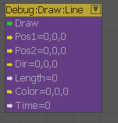
Inputs
| Port | Type | Description |
|---|---|---|
| Draw | Any | Draws a line in 3D space |
| Pos1 | Vec3 | Starting point of the line |
| Pos2 | Vec3 | Ending point of the line |
| Dir | Vec3 | Direction of the line |
| Length | Float | Length of the line |
| Color | Vec3 | Color of the line |
| Time | Float | Number of seconds the circle will be visible for |
PlanarDisc
Used to draw a disc.
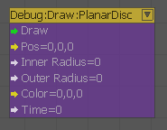
Inputs
| Port | Type | Description |
|---|---|---|
| Draw | Any | Draws a disc |
| Pos | Vec3 | Position of the disc center |
| InnerRadius | Float | Inner radius of the disc |
| OuterRadius | Float | Outer radius of the disc |
| Color | Vec3 | Color of the disc |
| Time | Float | Number of seconds the circle will be visible for |
Sphere
Used to draw a sphere.
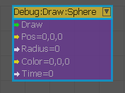
Inputs
| Port | Type | Description |
|---|---|---|
| Draw | Any | Draws a sphere |
| Pos | Vec3 | Position of the sphere center |
| Radius | Float | Radius of the sphere |
| Color | Vec3 | Color of the sphere |
| Time | Float | Number of seconds the circle will be visible for |